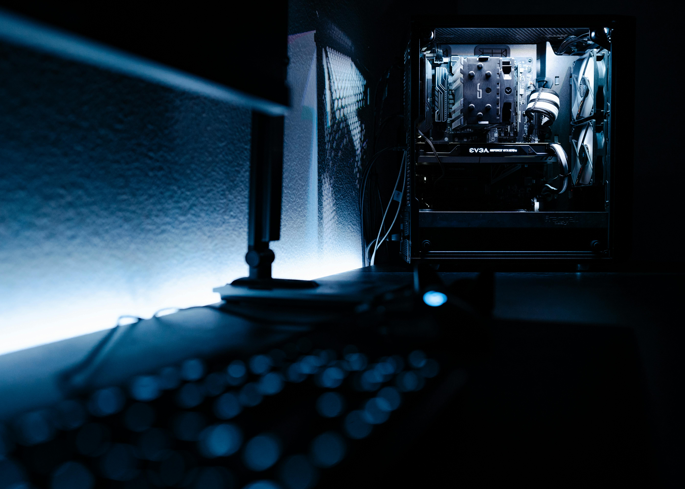
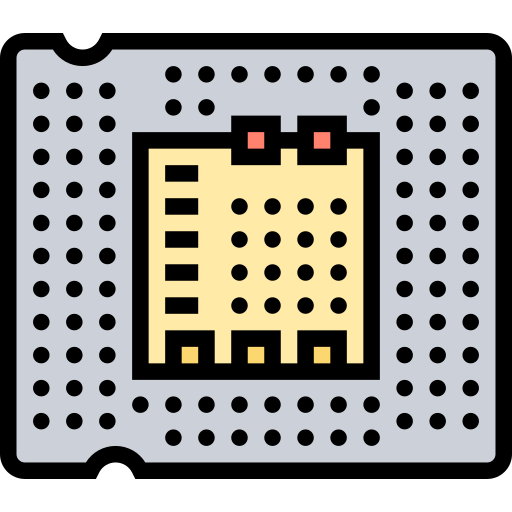
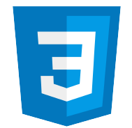
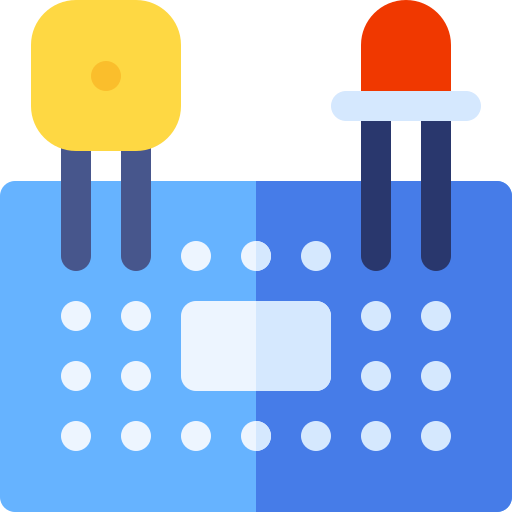
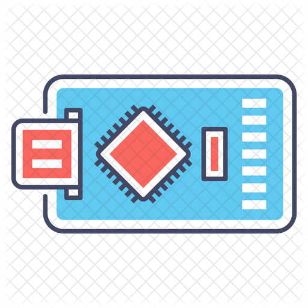
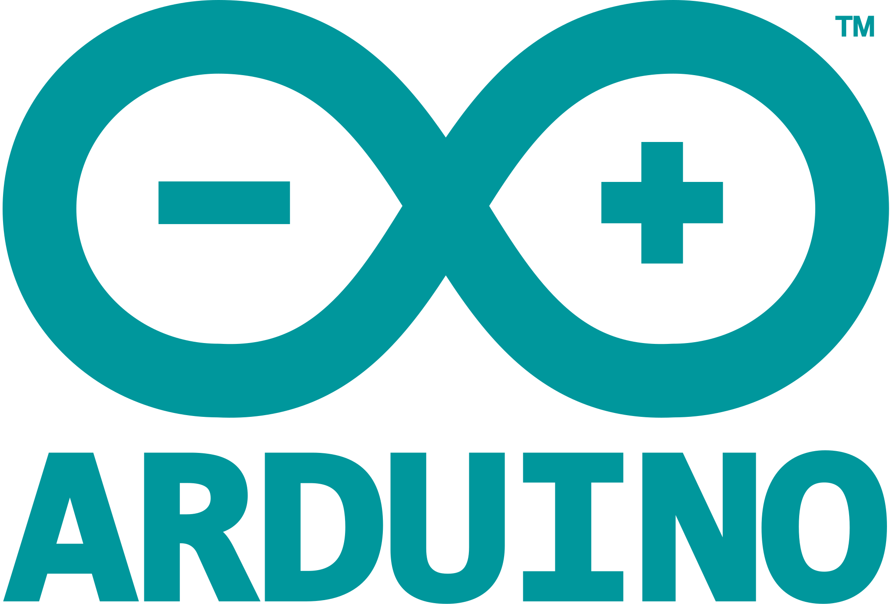
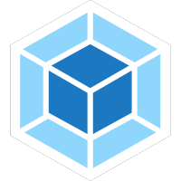
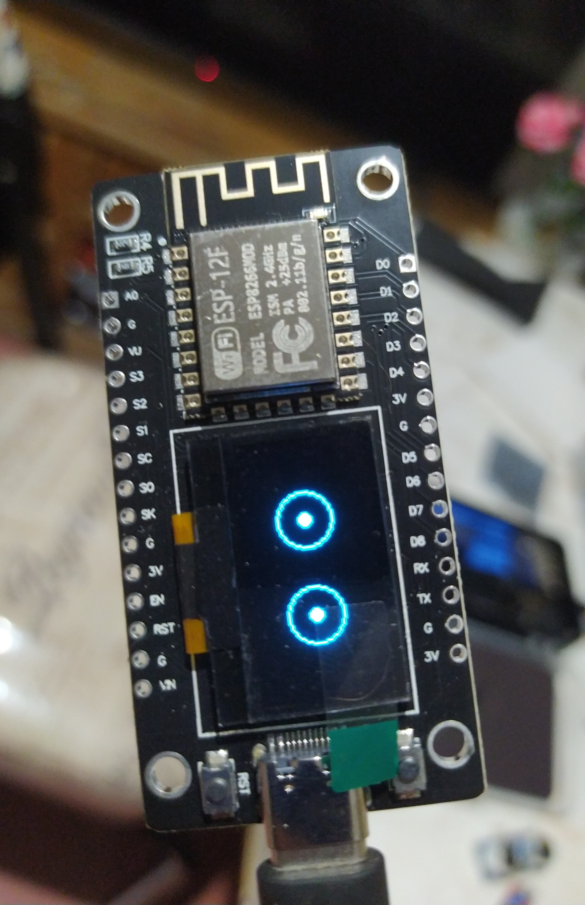
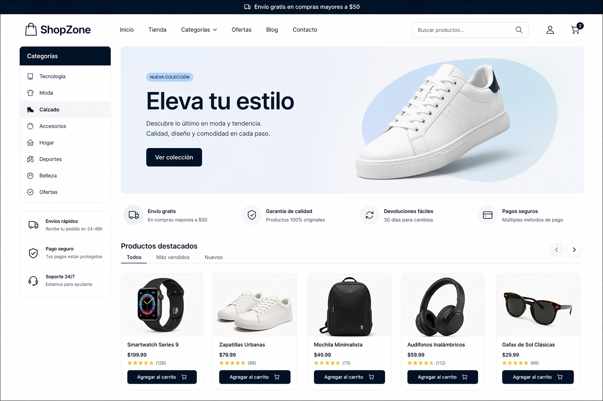
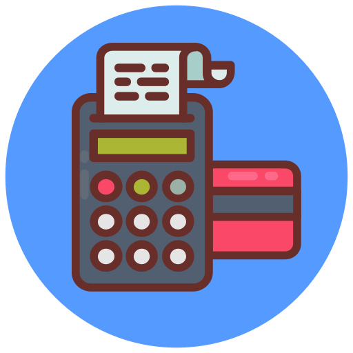

Mi nombre es Antonio Castor Silva, Soy desarrollador web enfocado en frontend con experiencia en la creación de aplicaciones y páginas web funcionales. Cuento con conocimientos en HTML, CSS y JavaScript, así como en la implementación de soluciones prácticas para proyectos reales.
También tengo experiencia en electrónica y robótica, donde he desarrollado proyectos con microcontroladores, IoT y creación de drones. Esto me permite tener una visión más completa al momento de desarrollar soluciones tecnológicas.
He trabajado en la reparación de dispositivos móviles, lo que fortaleció mis habilidades de resolución de problemas, análisis técnico y trabajo práctico con hardware.
Me considero una persona autodidacta, en constante aprendizaje y con interés en mejorar continuamente mis habilidades en desarrollo web y tecnología. Además, disfruto la música, el cine y el desarrollo de proyectos personales.

Se implementó comunicación serial (TX/RX), procesamiento de señales y envío de información para visualización remota, permitiendo supervisión desde cualquier dispositivo conectado.
Este proyecto demuestra la integración entre hardware y software, combinando electrónica, redes y desarrollo web.
También puedes acceder a al proyecto desde el repositorio de github
HTML JavaScriptPortafolio web personal desarrollado con HTML, CSS y JavaScript, enfocado en mostrar proyectos reales de desarrollo web, IoT y robótica. Se implementó una interfaz moderna, responsive y optimizada para una mejor experiencia de usuario.
El proyecto incluye integración de modales dinámicos, estructura semántica para SEO y optimización de recursos (imágenes y estilos) para mejorar el rendimiento en navegador.
También puedes acceder a el proyecto desde el repositorio de github
JavaScript NPM HTML
Desarrollo de plataforma e-commerce enfocada en la venta de productos, implementando estructura web optimizada y experiencia de usuario orientada a conversión.
Se trabajó en la creación de interfaces dinámicas, organización de productos y optimización visual, así como integración con herramientas de gestión de contenido.
Se utilizaro sistemas de pago como stripe o paypal
También puedes acceder a el proyecto desde el repositorio de github
JavaScript HTML
StripeProyecto IoT para monitoreo inteligente de motores usando ESP32 DevKit, sensores y visualización remota.
Permite supervisar variables del sistema y mostrar datos en una interfaz web para análisis y diagnóstico.
HTML JavaScript